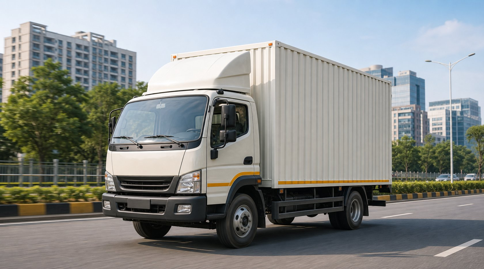
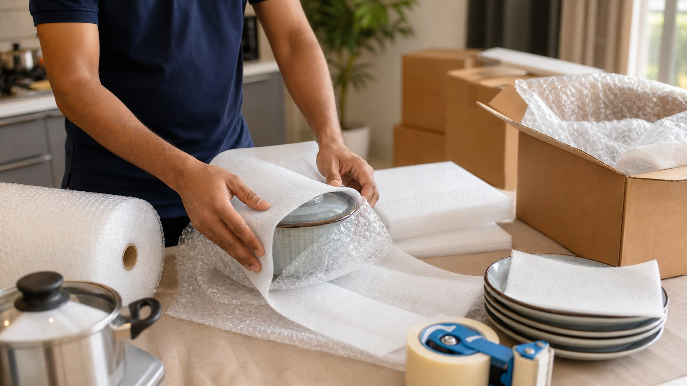

Home Shifting
Household goods are packed and loaded for quick doorstep movement from Delhi to Jaipur.
Fast and organized Delhi to Jaipur relocation for homes, offices and small goods with safe packing and short-route coordination.

Delhi to Jaipur relocation is a popular short-distance route for families, students, professionals and small businesses moving between NCR and Rajasthan. Easy India Packers Movers plans pickup timing, packing material, manpower and vehicle size according to your goods and delivery access. Our packers and movers Delhi to Jaipur service is suitable for local-style intercity shifting, office movement, compact loads and complete home relocation. Customers shifting from Delhi to Jaipur get a practical estimate and faster transit planning compared with longer metro routes. The process remains simple, clear and focused on careful handling.
For route estimate, survey booking and moving guidance, call or WhatsApp 8860688698.
Submit Enquiry
Household goods are packed and loaded for quick doorstep movement from Delhi to Jaipur.

Office items, files, chairs and computers are shifted with planned packing and unloading support.

Cartons, cushioning and labels are used according to item type and the shorter intercity route.

Goods are loaded carefully and transported through a planned Delhi to Jaipur schedule.
Call or WhatsApp pickup address, Jaipur delivery point, goods list and move date.
Our team reviews packing needs, goods volume and access at both locations.
Quotation, vehicle type, manpower and moving slot are confirmed after approval.
Goods are packed, loaded, transported and delivered in Jaipur with unloading help.
| House Size | Approximate Charges |
|---|---|
| 1 BHK | ₹8,000 - ₹16,000 |
| 2 BHK | ₹14,000 - ₹28,000 |
| 3 BHK | ₹22,000 - ₹42,000 |
*Charges vary based on distance, floor access, goods volume and packing requirement. Call 8860688698 for an accurate quote.

Good for compact goods, small appliances, student items and limited cartons.

Useful for protected household goods movement on the shorter route.

Suitable for full home shifting and dedicated office movement.
Delhi to Jaipur shifting is a shorter intercity route and is usually completed in 1 to 2 days after pickup, depending on loading time and delivery access.
Yes, Delhi to Jaipur charges are generally lower than longer routes because distance and transit time are shorter, though goods volume and packing needs still affect price.
Yes, small household goods, appliances, cartons and personal items can be moved through suitable mini truck or shared load options.
Yes, office furniture, documents, computers and work material can be packed and moved from Delhi to Jaipur with planned loading.
Call or WhatsApp 8860688698 with pickup details, Jaipur destination, goods list and moving date to receive an estimate.
Talk to Easy India Packers Movers for short-route planning, packing support and a clear Delhi to Jaipur quote.